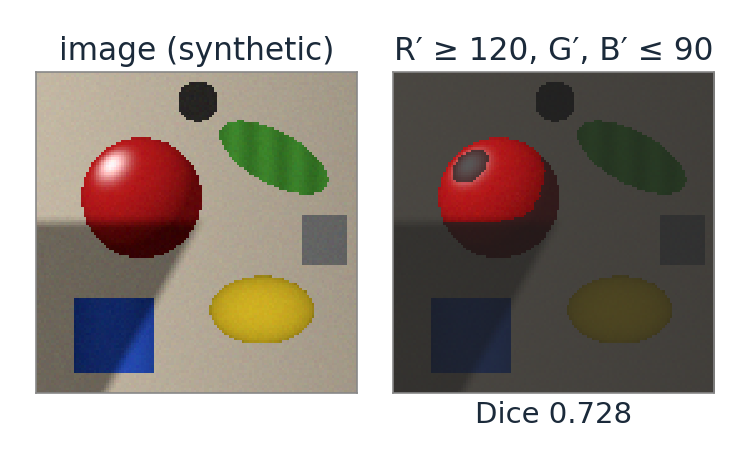
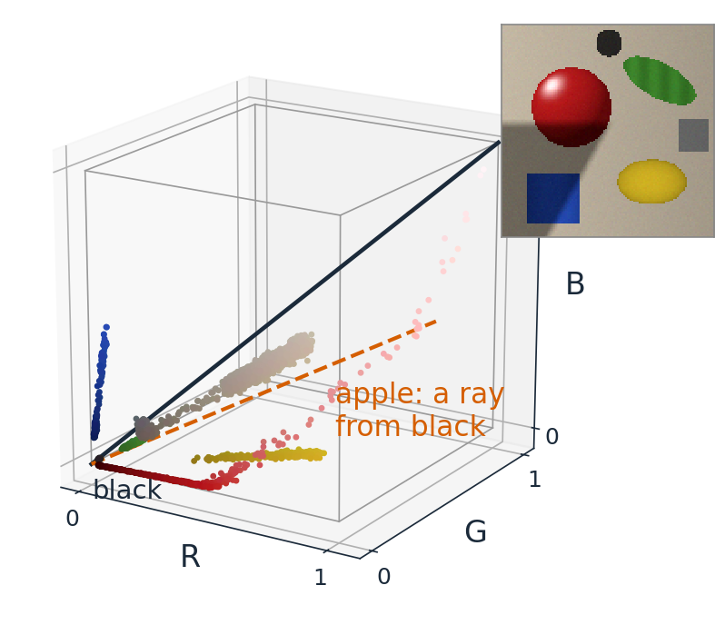
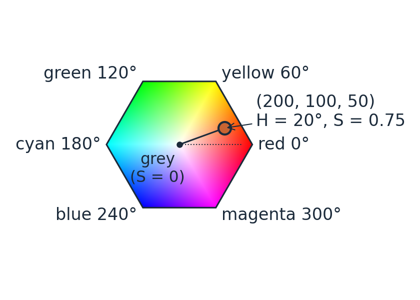
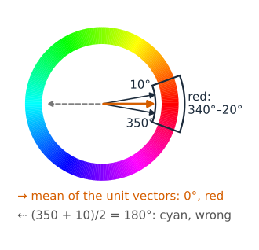
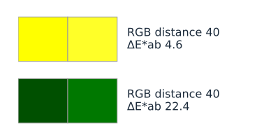
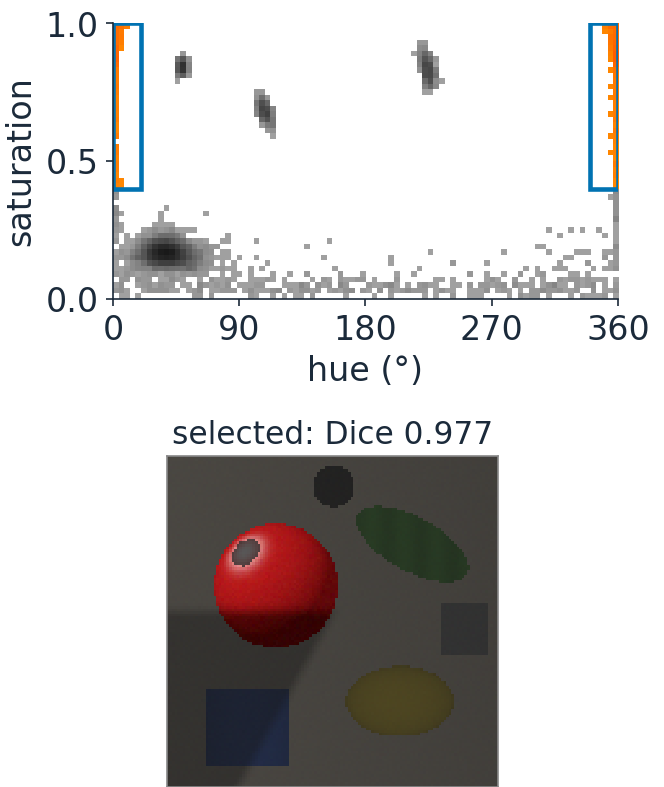
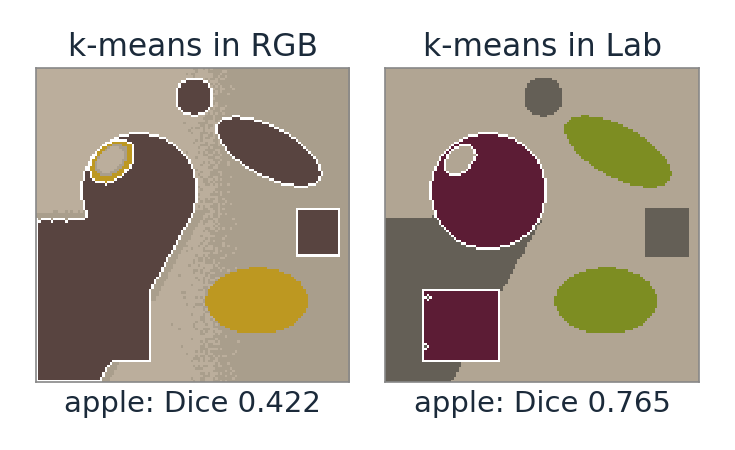

Two questions an analysis asks of colour: “find the red objects” and “how different are these two colours?”. Neither is easy in RGB.
The pixels of an image are a cloud of points in 3D; a colour space is a choice of coordinates for that cloud.
HSV: hue as an angle, saturation, value. Survives shading; singular at grey.
CIELAB: lightness and two opponent axes, built so that distance ≈ perceived difference (ΔE).
Segmentation: pick the space in which the wanted colours form a simple region.
Slides titled The math give the formulas and proofs; the ideas are complete without them.
Why RGB is awkward for analysis
Shading changes all three channels. A red apple in shadow has small R, G and B: a threshold “R > 120” cuts the apple in half.
Equal RGB steps are not equal visible steps. Codes (255, 255, 0) and (255, 255, 40) are hard to tell apart; (0, 80, 0) and (0, 120, 0) are obviously different. Both pairs are 40 apart.
Hue, saturation and brightness are mixed in every channel. “Red” is not a range of one channel; it is a direction.
Better coordinates separate how much light from which colour, and measure differences as we see them.

The pixel cloud
Plot each pixel as a point at (R, G, B): an image becomes a cloud inside the RGB cube.
Greys lie on the diagonal from black to white.
An object under varying light lies on a ray from black: all three values scale together (in linear light exactly, in encoded values nearly).
A segmentation is a region of this space; a threshold on one channel is a slab with flat walls.
A good colour space bends the cube so that the wanted region becomes simple: a wedge, a disc, a ball.

HSV: colour for picking colours
The RGB cube seen along its grey diagonal is a hexagon. HSV (Smith, 1978) uses it as a colour wheel:
V (value) = \max(R, G, B): how bright the strongest channel is.
S (saturation) = (\max - \min)/\max: how far from grey (0 = grey, 1 = pure).
H (hue): the angle around the grey axis: red 0°, yellow 60°, green 120°, cyan 180°, blue 240°, magenta 300°.
(200, 100, 50): V = 200/255 = 0.78, S = 150/200 = 0.75, H = 20° (orange).

The math: computing H, S, V
With M = \max(R, G, B), m = \min(R, G, B), d = M - m (values in [0, 1]):
V = M, \qquad S = \begin{cases} d / M & M > 0 \\ 0 & M = 0 \end{cases}, \qquad H = 60° \times \begin{cases} \dfrac{G - B}{d} \bmod 6 & M = R \\[4pt] \dfrac{B - R}{d} + 2 & M = G \\[4pt] \dfrac{R - G}{d} + 4 & M = B \end{cases}
H is undefined for d = 0 (all greys): a singularity along the whole grey axis.
Piecewise linear on the hexagon, not a true angle; good enough to order the hues around a circle.
Hue is an angle
It wraps. Red sits at both 0° and 360°: “red” is the interval 340°–20°, a union of two intervals on the number line.
Averaging needs care. The mean of 350° and 10° is 0° (red), not 180° (cyan): average the unit vectors (\cos H, \sin H).
It is undefined at grey. Near the grey axis a tiny noise turns the hue anywhere: a hue mask of a noisy image speckles in grey and dark regions. Fix: require a minimum saturation (and value).
It ignores shading. Scaling all three channels by the same factor keeps H and S: a hue threshold survives shadows where an R threshold fails. The same idea: normalised rgb, r = R/(R+G+B), g = G/(R+G+B).

The math: invariance and the circular mean
Shading: (R, G, B) \to (kR, kG, kB) with k > 0 scales M, m and d by k, so
S = \frac{kd}{kM} = \frac{d}{M}, \qquad H \propto \frac{kG - kB}{kd} = \frac{G - B}{d}: \quad \text{unchanged; } V \to kV.
(In encoded values a scaling of light is a scaling of codes only approximately, through the power law; in linear values it is exact.)
Circular mean of angles H_i: \bar H = \operatorname{atan2}\!\big(\sum_i \sin H_i, \sum_i \cos H_i\big), the direction of the mean unit vector. Its length \bar R = \|\frac1n\sum_i (\cos H_i, \sin H_i)\| is 1 when all hues agree and near 0 when they are spread out (e.g. noise around grey).
Try it: the colour cloud
CIELAB: a space for differences
CIELAB (1976) starts from XYZ and imitates perception:
L* (lightness, 0–100): a cube root of luminance, like the gamma curve. 18 % grey is L^* = 49.5: “middle grey” is not 50 % of the light.
a* (green − red) and b* (blue − yellow): opponent axes, as in the visual system. Greys have a^* = b^* = 0.
The white point is built in: everything is relative to the white (a simple white balance).
Polar form: chromaC^* = \sqrt{a^{*2} + b^{*2}} and hue angleh = \operatorname{atan2}(b^*, a^*): a perceptual version of HSV.
f compresses like the eye’s response; the linear piece avoids an infinite slope at black.
White: f = 1 everywhere, so (100, 0, 0). A grey kX_n, kY_n, kZ_n has equal f’s: a^* = b^* = 0.
CIELUV (same year) does the same with a different chromatic part; it is used where a more uniform chromaticity diagram is wanted.
ΔE: colour difference as a distance
\Delta E^*_{ab} = the Euclidean distance in Lab. About 1–2.3 is just noticeable.
pair (codes)
RGB distance
\Delta E^*_{ab}
(255, 255, 0) vs (255, 255, 40), yellows
40
4.6
(0, 80, 0) vs (0, 120, 0), dark greens
40
22.4
Lab is only approximately uniform: differences in saturated blues come out too large, and the just-noticeable “ellipses” (MacAdam) are not circles.
CIEDE2000 corrects this with weights for lightness, chroma and hue (formula not needed here; the demos offer it).

Choosing a space for segmentation
The pixels form a cloud; a class is a region of it. Choose the space in which the region is simple:
Hue wedge with a saturation (and value) floor in HSV: “red objects, in light and in shadow”.
Disc or box in a^*b^*: colour regardless of lightness.
Ball of radius ΔE around a reference colour in Lab: “everything that looks like this”.
A 2D histogram of the two chromatic coordinates (H–S, a^*–b^*, C_b–C_r, r–g) is where to see the clusters and draw the region.
One threshold is enough when one derived channel separates the classes: Otsu on a^* or on hue (the thresholding day’s Otsu, on a better number).

Clusters: isodata in 3D
The thresholding day’s isodata alternates between “split the pixels at the threshold” and “move the threshold between the two class means”. In 3D colour space the same loop is k-means:
pick k initial colours (centres);
give each pixel to its nearest centre;
move each centre to the mean of its pixels; repeat until nothing changes.
The result depends on the space (distances!) and on the start. In RGB the shadow and the lit side of an object may split into two clusters; in Lab the split follows colour more closely.
k-means as an algorithm (its objective, convergence, good starts) belongs to the Gaussian-mixture elective.

Try it: colour segmentation
A colour model as a data term
Segmentation by colour alone treats every pixel separately: noise and shading leave holes and specks.
Fit a model of each class’s colours (a Gaussian in Lab, or a mixture): -\log P(\text{colour} \mid \text{class}) is a data term.
Add a smoothness term and minimise: graph cuts (day 13); interactive versions draw only a box around the object and learn both colour models (GrabCut).
Summary
An image’s pixels are a cloud in 3D; a colour space is a choice of coordinates, and a segmentation is a region.
HSV: hue is an angle (wraps, circular mean), undefined at grey (use a saturation floor), unchanged by shading.
CIELAB: lightness by a cube root, opponent axes a^*, b^*, the white built in; ΔE = Euclidean distance ≈ perceived difference (1–2 just noticeable; CIEDE2000 refines it).
Choose the space in which the class is simple: hue wedge, a^*b^* disc, ΔE ball, Otsu on one derived channel, or k-means (isodata in 3D).